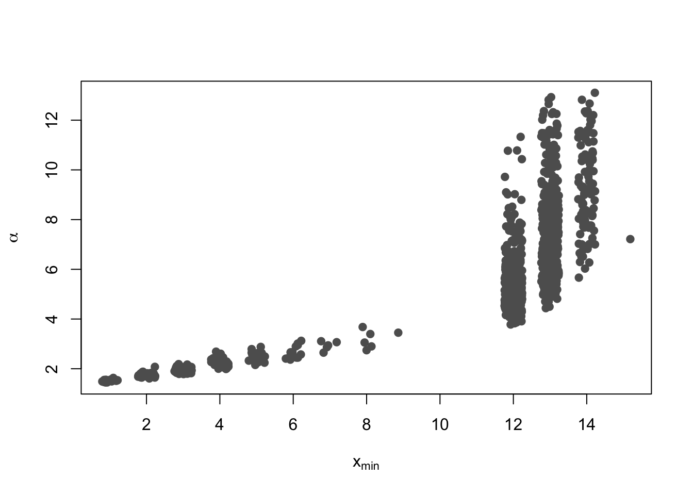
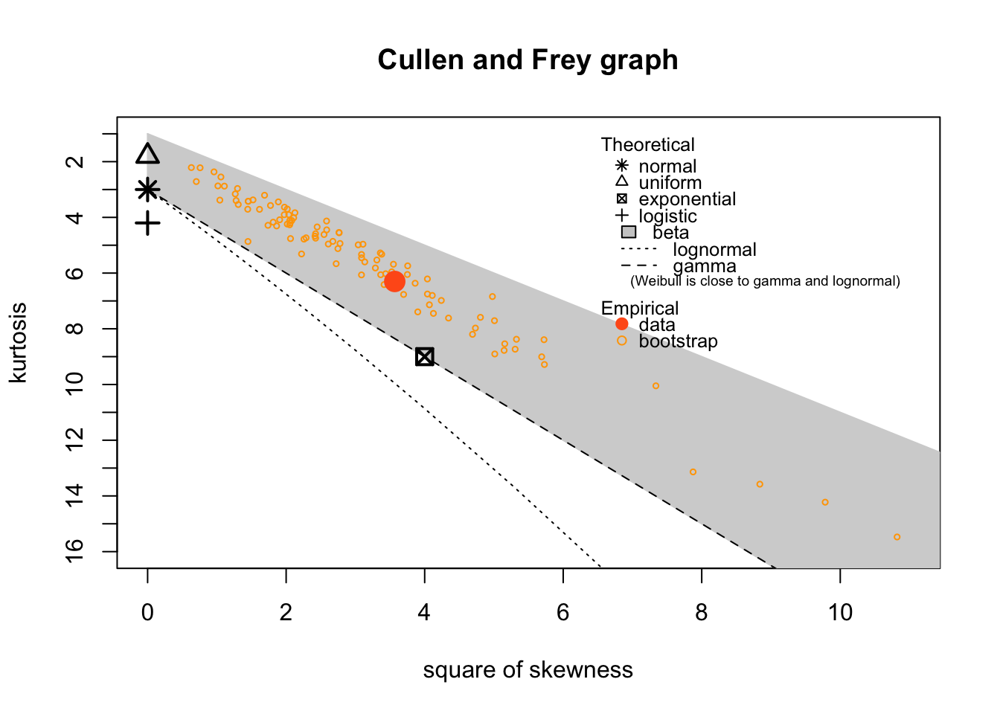
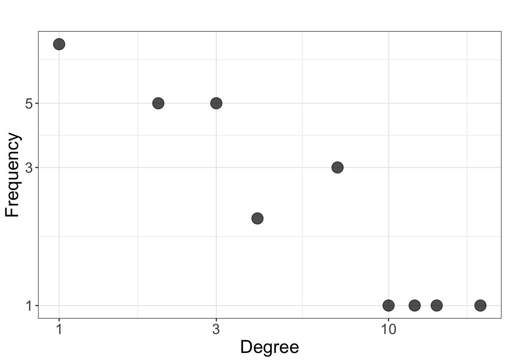
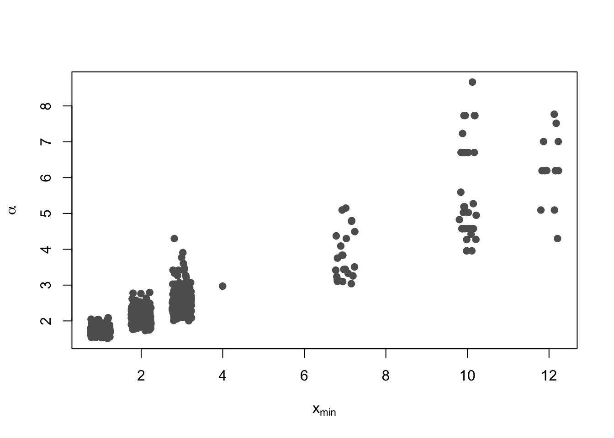

library(R.ROSETTA)
library(fitdistrplus)
library(ggplot2)
library(poweRlaw)
library(tidyverse)
out_jon <- rosetta(autcon)
out_ge <- rosetta(autcon, reducer = "Genetic", pAdjustMethod = "fdr")
#### Johnson reducer
vals <- unname(table(unlist(strsplit(out_jon$main$feature[which(out_jon$main$pValue<0.05)], ","))))
freqs <- table(vals)
descdist(vals %>% as.numeric, discrete = FALSE,obs.col = "#FF5D1B")## summary statistics
## ------
## min: 1 max: 22
## median: 6
## mean: 7.628571
## estimated sd: 6.010215
## estimated skewness: 0.7329735
## estimated kurtosis: 2.575866df1 <- data.frame(degrees = as.numeric(freqs %>% names), freqs = as.numeric(freqs %>% unname))
ggplot(df1, aes(x = degrees, y = freqs)) +
geom_point(colour = "black", size = 5,alpha = 7/10) +
scale_x_continuous("Degree",
trans = "log10") +
scale_y_continuous("Frequency",
trans = "log10") +
ggtitle("") +
theme_bw()+
theme(text = element_text(size=20))# tests for power law
data_pl <- displ$new(vals)
data_pl$getXmin()## [1] 1data_pl$getPars()## NULLdata_pl$setXmin(5)
data_pl$setPars(2)
est = estimate_pars(data_pl)
est = estimate_xmin(data_pl)
data_pl$setXmin(est)
# Data CDF (Cumulative density function)
plot(data_pl, pch = 19, col = "#5f5f5f", xlab="", ylab="CDF")
lines(data_pl, col="#9cd700", lwd=3)# Bivariate scatter plot
bs = bootstrap(data_pl, no_of_sims = 1000, threads = 2)
plot(jitter(bs$bootstraps[, 2], factor = 1.2), bs$bootstraps[, 3], pch = 19, col = "#5f5f5f", ylab=expression(alpha), xlab=expression("x"[min]))
bs_p = bootstrap_p(data_pl, no_of_sims = 1000, threads = 2)
# P value
bs_p$p## [1] 0.457# Goodness of fit
bs_p$gof## [1] 0.1213908#### Genetic reducer
vals <- unname(table(unlist(strsplit(out_ge$main$features[which(out_ge$main$pValue<0.01)], ","))))
freqs <- table(vals)
descdist(vals %>% as.numeric, discrete = FALSE, obs.col = "#FF5D1B")
## summary statistics
## ------
## min: 1 max: 19
## median: 3
## mean: 4.333333
## estimated sd: 4.582576
## estimated skewness: 1.888856
## estimated kurtosis: 6.300659df1 <- data.frame(degrees = as.numeric(freqs %>% names), freqs = as.numeric(freqs %>% unname))
ggplot(df1, aes(x = degrees, y = freqs)) +
geom_point(colour = "black", size = 5,alpha = 7/10) +
scale_x_continuous("Degree",
trans = "log10") +
scale_y_continuous("Frequency",
trans = "log10") +
ggtitle("") +
theme_bw()+
theme(text = element_text(size=18))
# tests for power law
data_pl <- displ$new(vals)
data_pl$getXmin()## [1] 1data_pl$getPars()## NULLdata_pl$setXmin(5)
data_pl$setPars(2)
est = estimate_pars(data_pl)
est = estimate_xmin(data_pl)
data_pl$setXmin(est)
# Data CDF (Cumulative density function)
plot(data_pl, pch = 19, col = "#5f5f5f", xlab="", ylab="CDF")
lines(data_pl, col="#9cd700", lwd=3)# Bivariate scatter plot
bs = bootstrap(data_pl, no_of_sims = 1000, threads = 2)
plot(jitter(bs$bootstraps[, 2], factor = 1.2), bs$bootstraps[, 3], pch = 19, col = "#5f5f5f", ylab=expression(alpha), xlab=expression("x"[min]))
bs_p = bootstrap_p(data_pl, no_of_sims = 1000, threads = 2)
# P value
bs_p$p## [1] 0.187# Goodness of fit
bs_p$gof## [1] 0.1245143